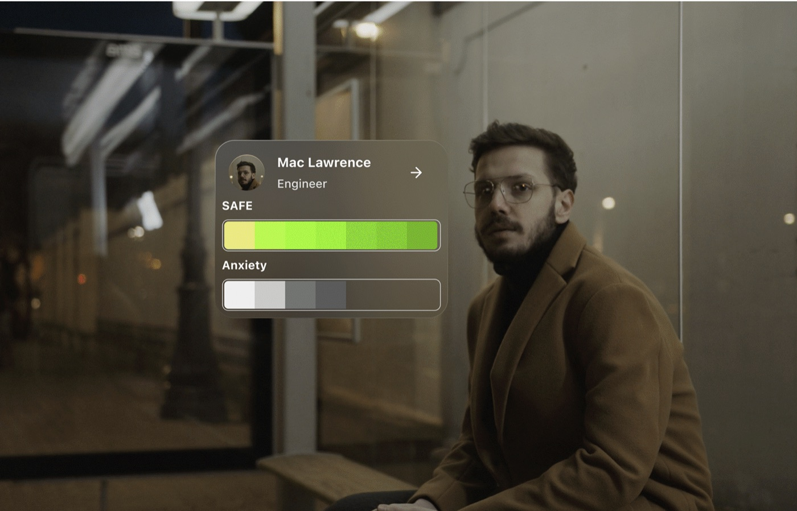
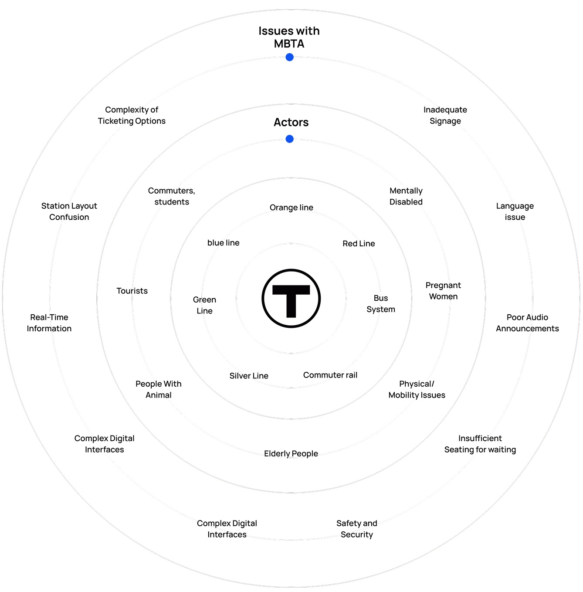
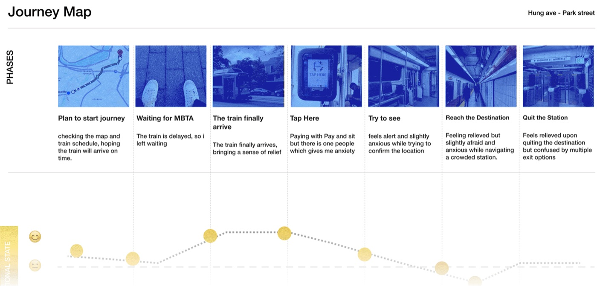
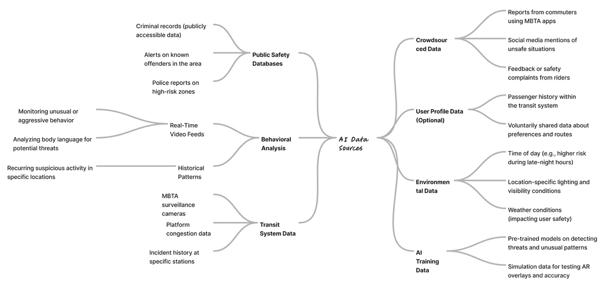
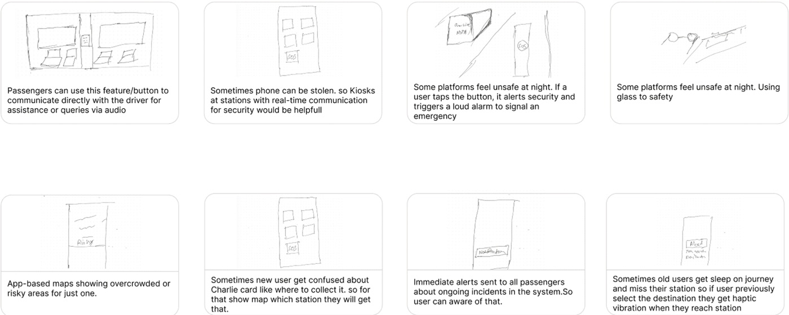
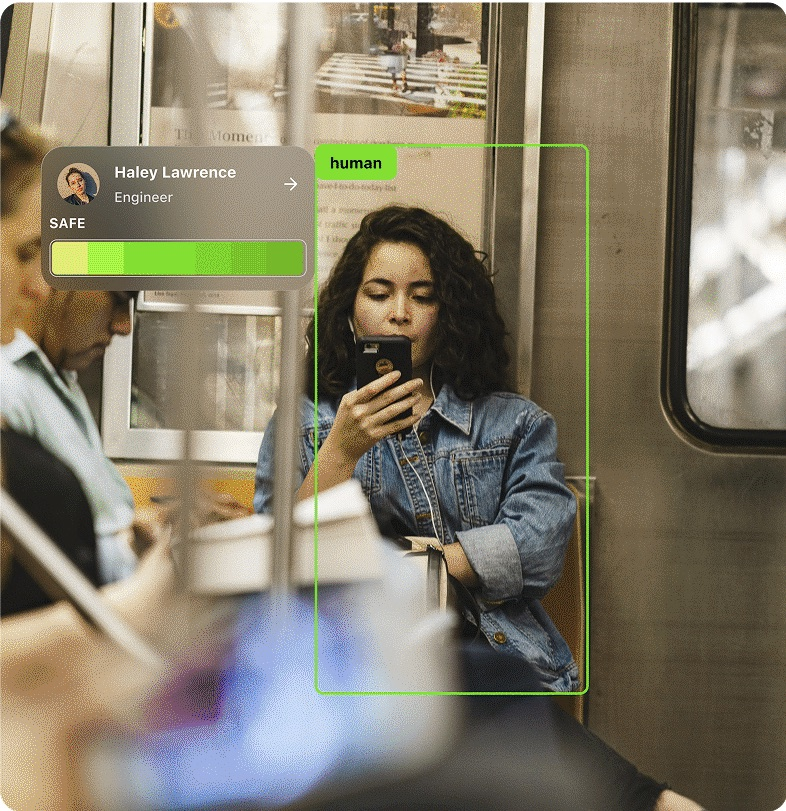
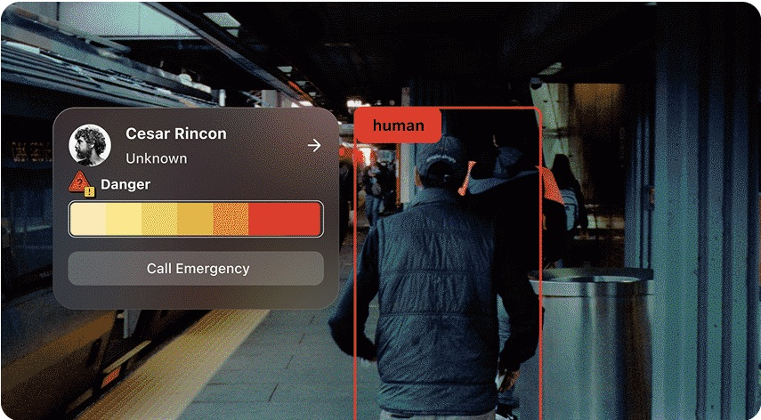
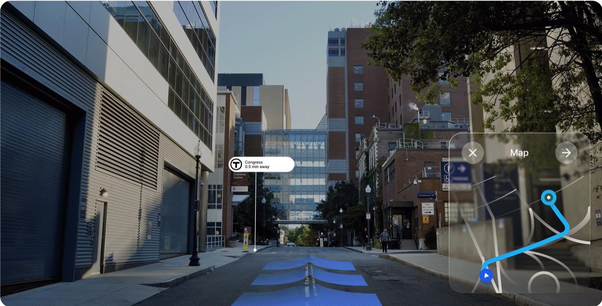
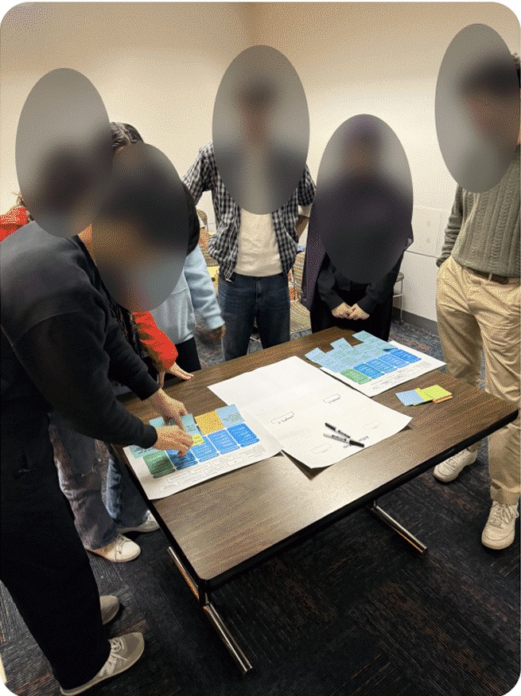

Computer vision & experience design · 2024
A computer vision concept for AR glasses that detects the people around a transit rider, reads their expressions, predicts how safe the situation is, and responds calmly.

58% of surveyed MBTA riders feel unsafe at night, with few tools to act when something feels wrong.
Research with riders, then a computer vision pipeline that reads faces and past data, delivered through a three state AR experience.
A system design and interactive concept, safeguards for its riskiest assumptions, and a plan to build and evaluate the model.
How might computer vision in AR glasses help transit riders anticipate risk, without turning the people around them into suspects?
Riders on Boston’s MBTA describe feeling exposed at night: poorly lit platforms, few visible staff, and little they can do when a situation feels wrong. Existing apps help with schedules and routes, but not with how safe a journey feels.
SafeVision uses the camera in a pair of AR glasses to detect the people nearby, analyse their facial expressions in real time, and combine that with previous data to predict how safe the situation is. The prediction drives a calm interface that tells the rider when to relax and when to act.
The project covers the full loop: research with riders, the design of the computer vision pipeline, and the experience built on top of it. The pipeline is specified as a system design, and the models are not trained yet.
I combined four methods to understand when riders feel unsafe, and what they already do about it.
Secondary research into the MBTA, mapped as rider groups (commuters, tourists, elderly passengers, people with disabilities) and the issues around them, such as poor signage, missing live information and safety concerns.

50 respondents recruited on Reddit, asked how safe they feel on the MBTA, especially at night, and which tools they rely on.
Six semi structured interviews with more than 25 questions, covering travel patterns, tools and moments of feeling unsafe.
“When I’m on the train late at night, I keep checking my surroundings. I just wish I knew who’s around me, it would make me feel calmer.”Participant 4
“If something feels off, I don’t always know what to do. I want to feel like I have some control before things get serious.”Participant 2
“I don’t want the system to make me afraid of people. I want it to help me stay calm and safe, like it’s watching out for me quietly.”Participant 3
A real trip from Hung Ave to Park Street. Anxiety peaked while waiting for a delayed train, when a stranger sat close by, and when searching for the right exit in a crowded station.

Limits of this research. The survey is a convenience sample from one online community, and six interviews point to patterns rather than prove them. I treat these findings as direction for design, not as measurement.
The insights point to a tension between awareness and fear. I turned them into four principles that shaped both the model outputs and the interface.
The default state should reassure. Alerts are rare, and the interface stays quiet when nothing is wrong.
Give riders clear options early, before a situation becomes an emergency.
Every prediction comes with how sure the system is, so riders can weigh it rather than obey it.
Keep riders looking at their surroundings, not down at a phone.
SafeVision runs as a five stage computer vision pipeline. Each stage feeds the next, and only the final result reaches the rider.
The previous data layer draws on seven kinds of sources, from public safety databases and transit system records to crowdsourced reports and environmental data.

I explored twenty early ideas through sketching, from panic buttons and SOS kiosks to crowd maps and haptic stop alerts. Using the Three Horizons framework, I placed them on a timeline: fixes for today, app features for the near term, and AR glasses as the longer term vision this project focuses on.

The experience is built around three states. The transitions between them matter as much as the states themselves.
Default while the safety score is high. A quiet green meter signals that nothing needs attention.
Triggered when the score drops below a threshold with high confidence. Offers one tap actions, and the rider decides.
Guides the rider to safety or their destination, with directions drawn onto the street.
Riders can dismiss Danger at any time to return to Shield, and can start Navigate on demand.
While the pipeline reads the carriage as safe, the glasses show only a quiet green meter over the people nearby, so riders can relax without constantly scanning.

When the model detects rising tension and its confidence is high, the panel shifts to a warm red meter and offers one tap actions: call emergency services, alert staff, or share location. The rider chooses what happens next, in line with control before escalation.

Route guidance is drawn onto the street, with the nearest station and a small map, so riders keep their eyes on their surroundings.


In a critique session, participants said feeling safe also depends on understanding how others are feeling. They described moments when someone nearby seemed tense or distracted, and not knowing whether to engage or give space.
This led to an Anxiety Level output from the expression model, shown at the top of this page, meant to help riders judge when to talk and when to step back.
It also raised the hardest question in the project, which the next section takes on.
A system that reads strangers’ faces and predicts how safe they are carries real risks. I treated them as design requirements, not afterthoughts.
Psychology research questions whether facial movements reliably reveal inner states [1]. A tense face can mean worry, cold or tiredness. So the expression reading is never used alone: it is weighed with context and history, and the interface always shows the model’s confidence.
Face analysis systems have been shown to perform unevenly across skin tones and genders [2], and historical records can over represent groups that are already over policed. Before deployment, the models would need testing for accuracy and false alarm rates across demographic groups.
The people being analysed are not the ones wearing the glasses. Early mockups showed names and occupations, which exposes far more than a rider needs to feel safe.
The next phase is to build and evaluate the pipeline, and test the experience with riders.
Safety is not only about protection. It is also about emotional awareness and social comfort: people want to understand the situation around them, not to be told whom to fear. Designing the computer vision pipeline taught me that the hardest decisions sit between the model and the person: what to show, how confident to be, and when to stay quiet.
That is the question I want to keep pursuing: how can computer vision systems support people’s sense of safety without shifting the risk onto others?